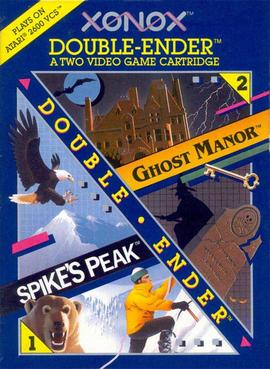
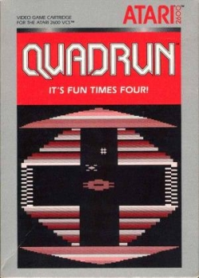
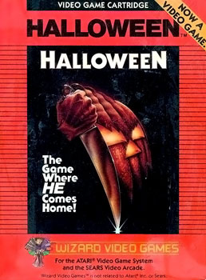
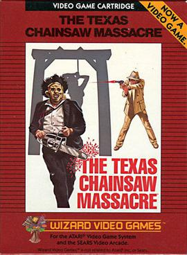
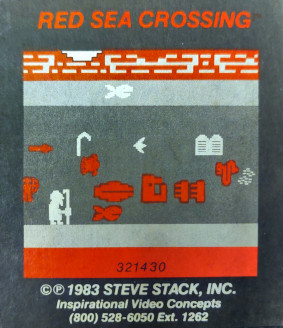
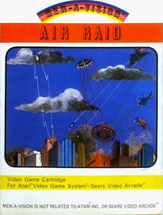

Solo juegos RETAIL: los que de verdad se vendieron en tiendas. Valores CIB aproximados (RetroGamePriceGuide, PriceCharting, 2026). Las rarezas de mail-order y promocionales van aparte. El numero uno se escapa de la liga.
03
#10
USD 1.000
KARATE
Atari 2600
Atari 2600
TARROVISIONCH 10
NO SIGNAL
Inserta gameplay aqui
KARATE
Atari 2600 · 1982 · ULTRAVISION · CIB ~USD 1.000
▶ POR QUEUltravision lanzo el juego y casi enseguida le paso la distribucion a Froggo. La version Froggo es comun y vale casi nada -pero la Ultravision original es de las mas dificiles de encontrar completa.
04
#9
USD 1.226

Atari 2600
TARROVISIONCH 09
NO SIGNAL
Inserta gameplay aqui
GHOST MANOR
Atari 2600 · 1983 · XONOX · CIB ~USD 1.226
▶ POR QUEVino en un cartucho 'Double-Ender': dos juegos completos en un solo cartucho con forma de X, compartiendo carcasa con Spike's Peak. Tirada chica de fin de ciclo.
▶ POR QUEPort del arcade vectorial de Atari. La variante 'silver label' -de los ultimos lanzamientos de Atari antes del crash del 83- se produjo en cantidades minimas.
▶ POR QUEEl juego educativo mas raro de toda la consola: ensenaba matematicas basicas. Tirada extremadamente limitada, sobreviven muy pocas copias completas.
07
#6
USD 1.500

Atari 2600
TARROVISIONCH 06
NO SIGNAL
Inserta gameplay aqui
QUADRUN
Atari 2600 · 1983 · ATARI · CIB ~USD 1.500
▶ POR QUEUno de los ultimos juegos que Atari lanzo antes de que el crash del 83 hundiera a la industria completa. Produccion minima, distribucion casi nula.
08
#5
USD 1.786
CAKEWALK
Atari 2600
Atari 2600
TARROVISIONCH 05
NO SIGNAL
Inserta gameplay aqui
CAKEWALK
Atari 2600 · 1983 · US GAMES · CIB ~USD 1.786
▶ POR QUEUS Games era una subsidiaria de Quaker Oats -la marca de cereales- que se metio al negocio de los videojuegos durante el boom y se retiro rapido cuando llego el crash. Tirada muy chica.
09
#4
USD 2.125

Atari 2600
TARROVISIONCH 04
NO SIGNAL
Inserta gameplay aqui
HALLOWEEN
Atari 2600 · 1983 · WIZARD VIDEO GAMES · CIB ~USD 2.125
▶ POR QUEAdaptacion de la pelicula slasher de John Carpenter. Las tiendas se negaron a venderlo por su violencia -algunas lo guardaban bajo el mostrador. Vendio pesimo, y por eso hoy es tan dificil de encontrar completo.
10
#3
USD 2.425
OUT OF CONTROL
Atari 2600
Atari 2600
TARROVISIONCH 03
NO SIGNAL
Inserta gameplay aqui
OUT OF CONTROL
Atari 2600 · 1983 · ATARI · CIB ~USD 2.425
▶ POR QUEOtro de los ultimos lanzamientos de Atari antes del crash de 1983. La produccion minima de esa epoca convirtio a varios titulos de esos meses en rarezas instantaneas.
11
#2
USD 2.490

Atari 2600
TARROVISIONCH 02
NO SIGNAL
Inserta gameplay aqui
TEXAS CHAINSAW MASSACRE
Atari 2600 · 1983 · WIZARD VIDEO GAMES · CIB ~USD 2.490
▶ POR QUEEl juego mas controvertido de toda la consola: adaptacion directa de la pelicula de terror. Las tiendas se negaron a venderlo en masa, asi que hoy es de los CIB mas dificiles de conseguir.
12
#1
USD 4.219
RIVER PATROL
Atari 2600
Atari 2600
TARROVISIONCH 01
NO SIGNAL
Inserta gameplay aqui
RIVER PATROL
Atari 2600 · 1983 · FOX VIDEO GAMES · CIB ~USD 4.219
▶ POR QUEEl juego retail 'normal' mas caro de toda la consola. Fox Video Games era una compania chica que broto y murio con el crash del 83 -dejando una de las tiradas mas escasas de toda la historia del 2600.
13
FUERA DEL TOP · PERO IMPOSIBLES DE IGNORAR
RAREZAS & NO-RETAIL
Estos NO se vendieron en tiendas normales: mail-order religioso, promocionales corporativos y un juego con una sola copia conocida en el mundo entero. Otra liga, otra historia.
▶ POR QUEVersion modificada de Space Invaders donde disparabas a la letra P-E-P-S-I. Coca-Cola la encargo como regalo interno para convenciones -se hicieron unas 125 copias, nunca se vendio en tiendas. Una copia se remato en eBay en 1.825 dolares en 2005.
15
MAIL ORDER · CIB ~USD 5.000
USD 5.000
GAUNTLET
Atari 2600
Atari 2600
TARROVISIONCH 02
NO SIGNAL
Inserta gameplay aqui
GAUNTLET
Atari 2600 · 1983 · ANSWER SOFTWARE · MAIL ORDER · CIB ~USD 5.000
▶ POR QUESin relacion con el arcade homonimo de 1985: este Gauntlet es un juego original para Atari 2600 vendido solo por correo. Un completo en caja hoy ronda los cinco mil dolares.
16
2 COPIAS · MAIL ORDER
USD 13.800

Atari 2600
TARROVISIONCH 03
NO SIGNAL
Inserta gameplay aqui
RED SEA CROSSING
Atari 2600 · 1983 · INSPIRATIONAL VIDEO CONCEPTS · 2 COPIAS · ~USD 13.800
▶ POR QUEJuego religioso vendido solo por telefono, anunciado una vez en la revista Christianity Today. Solo se conocen dos copias en el mundo -una aparecio en una venta de garage recien en 2007.
▶ POR QUEEl programador aficionado dueño de Gammation lo anuncio una sola vez en una revista. Solo se conoce UNA copia autentica en todo el mundo, y su dueño ha pedido hasta 500 mil dolares por ella -nunca vendida a ese precio.
18
HOLY GRAIL
USD 33.433

Atari 2600
TARROVISIONCH 05
NO SIGNAL
Inserta gameplay aqui
AIR RAID
ATARI 2600 · 1982 · MEN-A-VISION · SOLO 13 COPIAS · VENTA RECORD USD 33.433
▶ POR QUEEl cartucho mas raro de toda la consola: forma de T unica en toda la historia del Atari 2600, y solo se conocen 13 copias en el mundo. Una copia sellada se remato en 33.433 dolares en 2012 -el record de venta que se mantiene hasta hoy. No es solo rareza: es el juego retail mas caro jamas vendido de la consola.
19
ANALISIS DEL TOP
EL CRASH DEL 83 ESCRIBIO ESTA LISTA
Casi todo el top retail (Quadrun, Out of Control, Cakewalk, Gravitar silver label) son juegos de los ultimos meses de 1983, justo cuando el crash de la industria hundio las tiradas a su minimo historico. Y los dos juegos mas controvertidos -Texas Chainsaw Massacre y Halloween- valen caro precisamente porque las tiendas se negaron a venderlos.
20
CIERRA EL ARCO ATARI 2600
ATARI 2600 COMPLETO
Cerramos Atari 2600: los mejores del mundo y los mas caros. Cuentanos cual de estos grales te gustaria tener. Suscribete para la proxima consola.